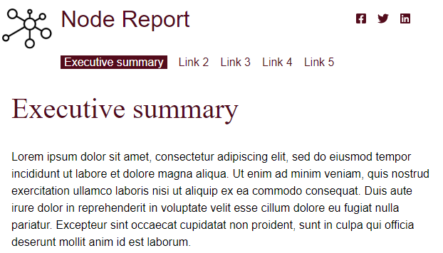
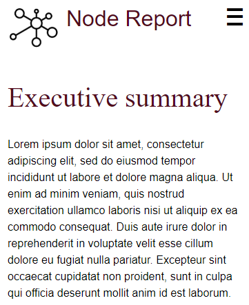

Page UI components reorder and resize to maintain readability when the viewport changes.
These screenshots show how, when the screen narrows from desktop to phone view, the social media and global menus reflow to be toggled visible/hidden via a “hamburger” menu button.
The hamburger pattern is discussed in module 12.
Example begins

Example ends
Example begins

Example ends